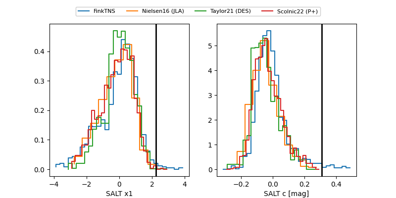

FINK: ZTF25absdxza
Lasair: ZTF25absdxza
ALeRCE: ZTF25absdxza
TNS: 2025yai
YSE: 2025yai
ZTF25absdxza (ztf,fink)
2025yai (tns,yse)
equatorial (ra, dec) = (349.3092,-2.15754)
galactic (l, b) = (76.8301,-56.35110)

last ztfg=19.62, ztfr=19.31
7 ztfg, 8 ztfr detections